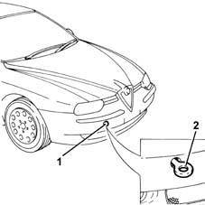
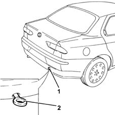

Towing points
- Path
- Technical Data > General information > VEHICLE TOWING AND LIFTING POINTS > Towing points
- Kind
- technical data / specifications
- Applies to
- all engines; all production periods
- Interactive page
- https://sloeber94.github.io/elrnDB-a156/en/#/3233247
Applies to: all engines; all production periods
The tow hook that comes with the vehicle is in the tool box located under the luggage compartment lining.
To fit the tow hook proceed as described below.
- Take the tow hook out of the tool box.
1. Remove the cover which is a press fit on the front bumper by pressing with a finger on the lower part of the plug until the spring is released.
2. Fully tighten the seal in its housing.

Take the tow hook out of the tool box.
1. Use a screwdriver protected with a soft cloth on the upper part of the rear bumper plug and press gently until the attachment spring comes out of its housing.
2. Fully tighten the seal in its housing.
